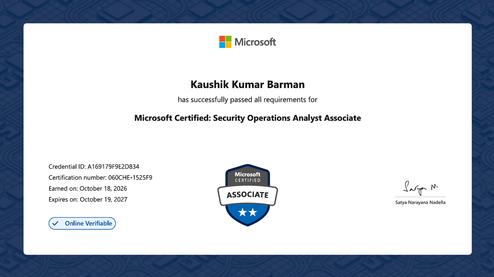
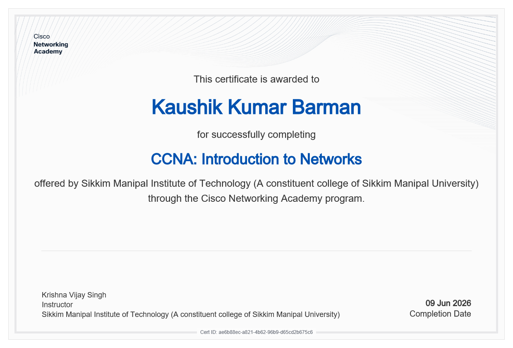
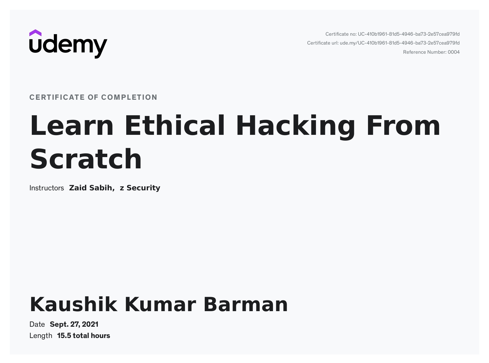

MICROSOFTASSOCIATE
Security Operations Analyst
Microsoft Certified: Security Operations Analyst Associate.
View certificate ↗kali@portfolio:~ whoami
My focus is SOC operations and blue team security, including threat detection, hunting, and incident investigation. I also explore red team techniques through isolated lab exercises.
PORTFOLIO
CERTIFICATES

MICROSOFTASSOCIATE
Microsoft Certified: Security Operations Analyst Associate.
View certificate ↗
CISCO NETWORKING ACADEMYNETWORKING
Completed through the Cisco Networking Academy program at Sikkim Manipal Institute of Technology.
View certificate ↗
UDEMYCOURSE COMPLETION
Course by Zaid Sabih and z Security.
View certificate ↗ABOUT ME
I’m a cybersecurity enthusiast focused on blue team work, SOC operations, threat hunting, and incident response. I build my skills through practical labs and writeups, and have a basic foundation in VAPT from web security exercises and CTFs.
I’m also a hardware enthusiast and enjoy exploring how connected devices work, especially in IoT.
PROFILES
Follow my writing, security practice, and professional updates.
CONTACT
For professional connections and conversations, find me on LinkedIn.
Connect on LinkedIn ↗